在“验证力的平行四边形定则”的实验中，某同学按照如下步骤进行操作：
a．在桌上放一块方木板，在方木板上铺一张白纸，用图钉把白纸钉在方木板上；
b．用图钉把橡皮条的一端固定在板上的
点，在橡皮条的另一端拴上两条细绳形成结点，细绳的另一端系着绳套；
c．如图甲，用两个弹簧测力计分别钩住绳套，互成角度地拉橡皮条，使结点到达某一位置
，记录结点位置和两个弹簧测力计的示数、两根细绳的方向；
d．按选好的标度，用铅笔和刻度尺作出两个弹簧测力计的拉力
和
的图示，并以
和
为邻边作平行四边形，画出它们所夹的对角线
；
e．只用一个弹簧测力计通过细绳套拉橡皮条， ；并按同一标度作出这个力
的图示；
f．比较
和
的大小和方向，看它们是否相同，得出结论．
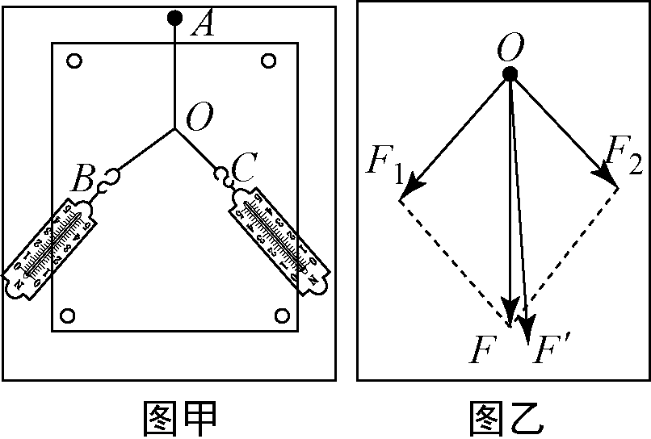


①经过多次重复试验偶然误差减小．
②偶然误差受主观条件影响，系统误差受客观条件影响．
③偶然误差只能减小，不可完全消除，系统误差可以消除．
①直尺直接估读到分度值下一位即可；
②电流表、电压表、万用表的电流和电压挡（读中间一条刻度线）；
③读数的基本原则是：十分之一估读法（
分度值为
（如：用分度值为
如图中的表头，若按
若按
若按
④螺旋测微器
俗称“千分尺”，估读到毫米的千分之一位，即
游标卡尺
①构造：如右图
②游标卡尺的精确度
原理：游标尺上总长度比主尺上同长度少1mm
1．
2．
3．
③读数方法
测量值为主尺和副尺读数的综合，
如下图所示，被测物体长度为
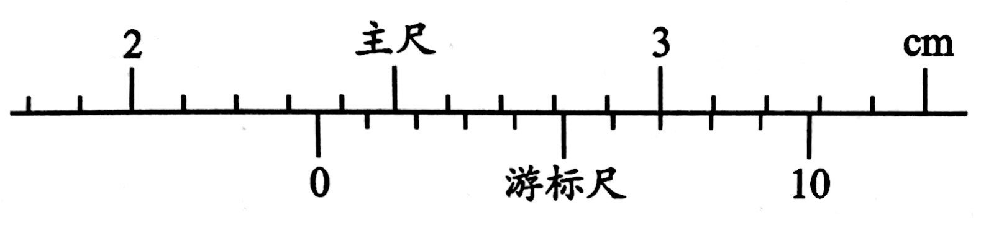
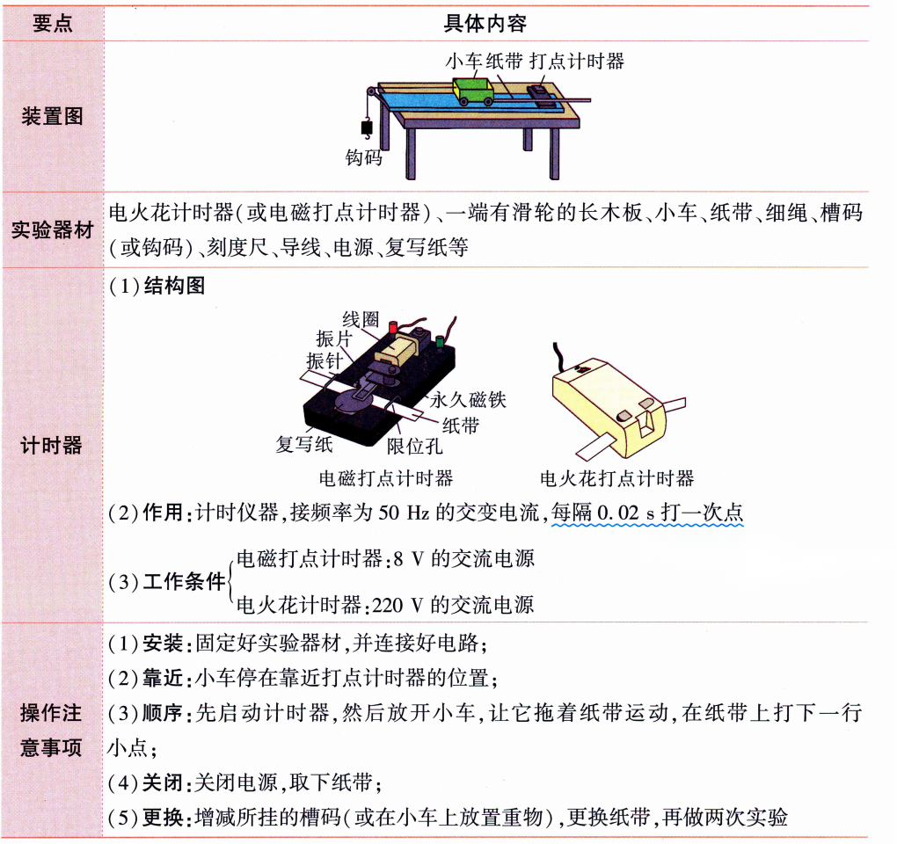
（1）光电门，测时间，平均速度约等于瞬时速度
（2）绘制图，求加速度（用两处光电门的平均速度当瞬时速度）
①结合两点之间间距，依据
②结合对应位置的时间，绘制图，求斜率
①加速度：偶数分两边，奇数舍中间，头减头，尾减尾，下标差值做分母。
②瞬时速度：左右等时，两倍时间
（教师可见内容）
问题：给你一幅图像，你应该关注图像的哪些信息？（可以画出下面给的图像，让学生分析）
参考答案：横纵坐标代表含义及单位、图像与坐标轴交点代表含义、图像斜率与面积代表含义
口诀：单脚斜面（见参考板书中图①）
解释：单（单位）；脚（图线与坐标轴交点）；斜（图像斜率）；面（图线与坐标轴围成面积）
多提醒学生在看图像的时候要注意横纵坐标的单位，这是易错点
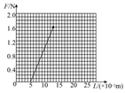
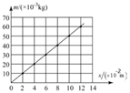
1、在分析图像表达式的时候，分三步走：
①（核心）建议先对研究对象进行受力分析，列出牛顿第二定律表达式；
②（难点）把图像纵坐标换成
③（目的）结合函数关系式与图像，分析其截距、斜率、面积所代表的含义．
备注：如果是电学实验，类比列出欧姆定律公式进行分析．
2、如果是自己自由选择横纵坐标，要保证最终画出来的图像是直线，即横纵坐标关系是线性关系．比如：根据公式
读数练习：
螺旋测微器的读数为
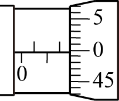
游标卡尺的读数为
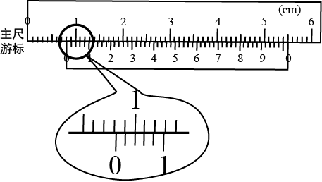
秒表的读数为
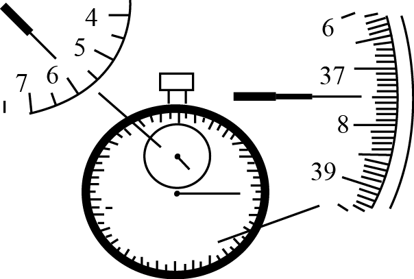
多用电表中选择开关置于欧姆
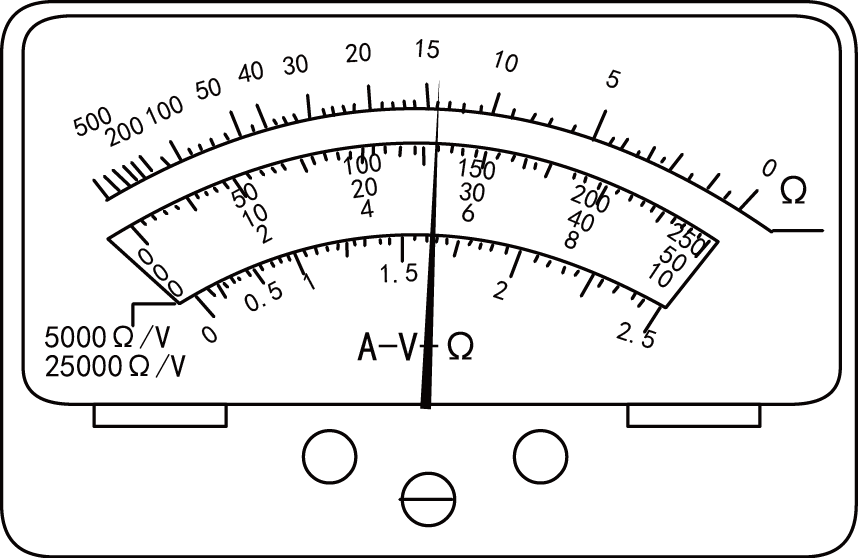
打点计时器是高中物理中重要的物理实验仪器，图中甲、乙两种打点计时器是高中物理实验中常用的，请回答下面的问题．
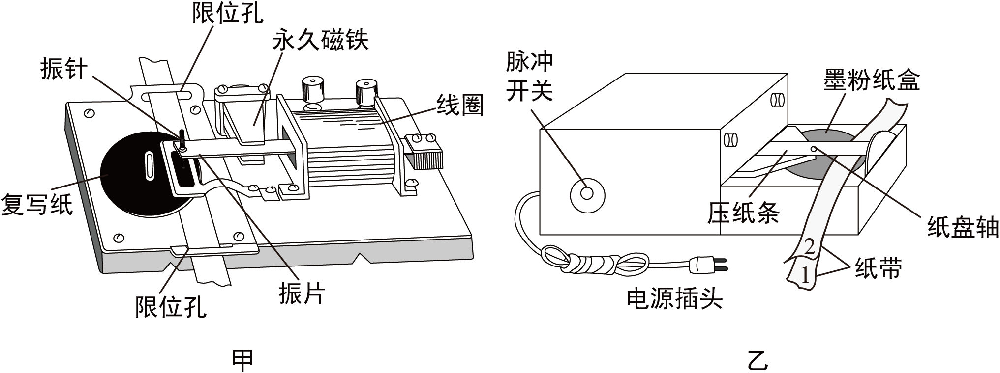
甲图是 打点计时器，电源采用的是 ．
乙图是 打点计时器，电源采用的是 ．
甲、乙两种打点计时器的打点周期为
关于打点计时器以及打点计时器的使用，下列说法正确的是（ ）
图中装置可用来探究物块的运动情况，细线平行于桌面，遮光片的宽度为
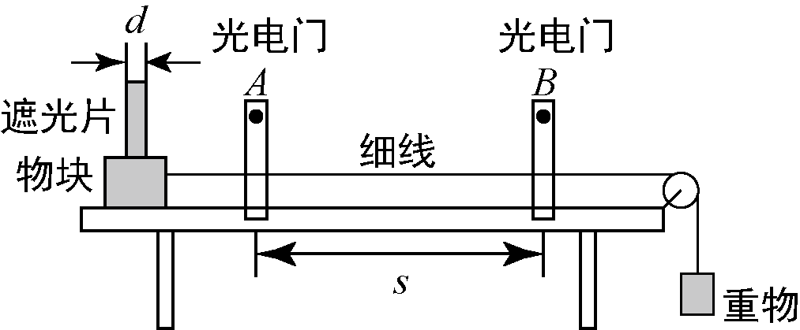
利用实验中测出的物理量符号，写出物块运动的加速度
遮光片通过光电门的平均速度 （选填“大于”、“等于”或“小于”）遮光片竖直中线通过光电门的瞬时速度，由此会产生误差，请写出一种减小这一误差的方法．答： ．
有一把游标卡尺，游标尺上有
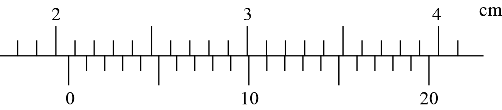
如图所示，用光电计时装置可以测出气垫导轨上滑块的瞬时速度．已知固定在滑块上的遮光条的宽度为
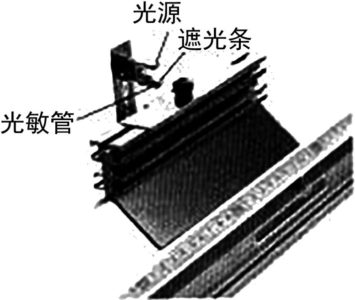
滑块经过光电门位置时的速度大小为
滑块经过光电门位置时的速度大小为
为使
为使
如图所示，左图是电磁打点计时器的示意图，右图是该打点计时器在某次实验中打出的纸带，则以下说法中正确的是（ ）
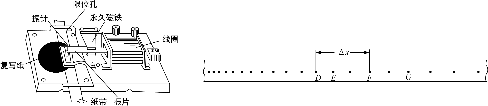
图甲中游标卡尺的读数是
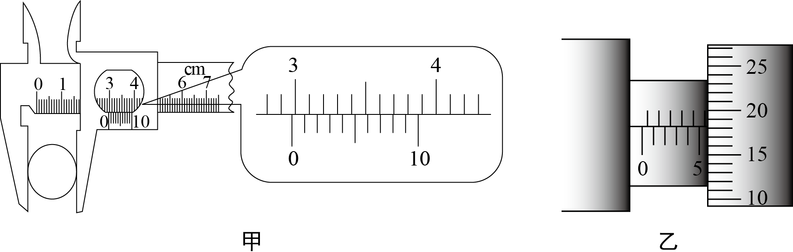
如图是某同学用打点计时器研究小车做匀变速直线运动时打出的一条纸带，
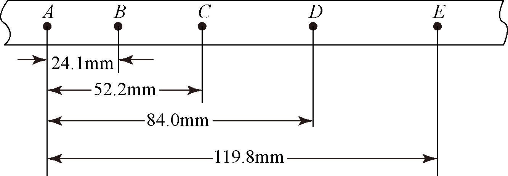
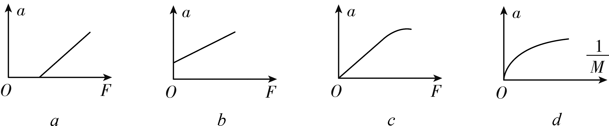
在“探究匀变速直线运动的规律”的实验时，如图是测得的一条纸带，本实验采用的打点计时器是电磁打点计时器，且纸带相邻两计数点之间还有
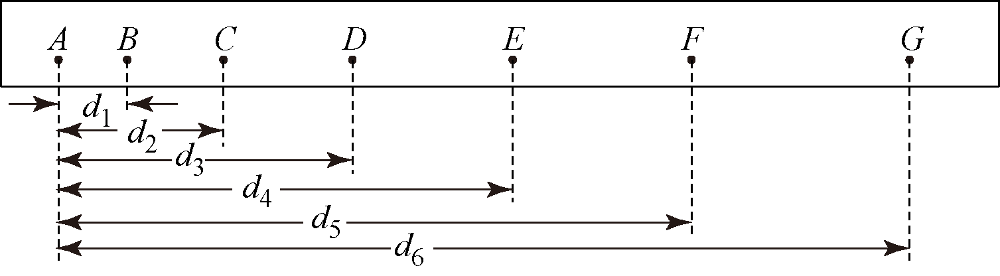
电磁打点计时器的额定工作电压是 ．相邻两点之间的时间间隔是 ．
若电磁打点计时器的打点周期为
若纸带在做匀变速直线运动，请用字母表示加速度
如图所示为用频闪相机拍摄的羽毛与苹果同时在真空环境下落的局部频闪照片，已知频闪相机每隔时间闪光一次．
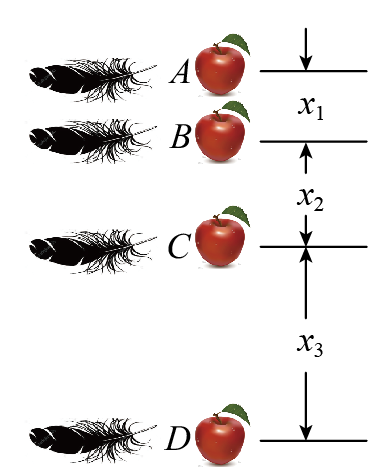
这个实验表明：如果我们可以减小 对物体下落运动的影响，直至其可以忽略，那么重量不同的物体下落快慢程度将会相同．
关于图中的、、，下列选项关系一定正确的是 ．
利用图片提供的信息可以求得当地的重力加速度值为 ．
若用图甲所示的装置测当地的重力加速度（已知打点计时器的工作频率为50Hz），得到纸带如图乙，每相邻两计数点之间还有4个计时点未画出，根据实验记录的数据计算重锤的加速度大小 ．（计算结果保留三位有效数字）
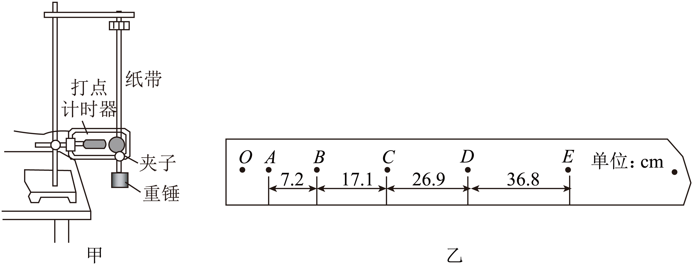
某同学利用自由落体运动测量重力加速度，实验装置如图
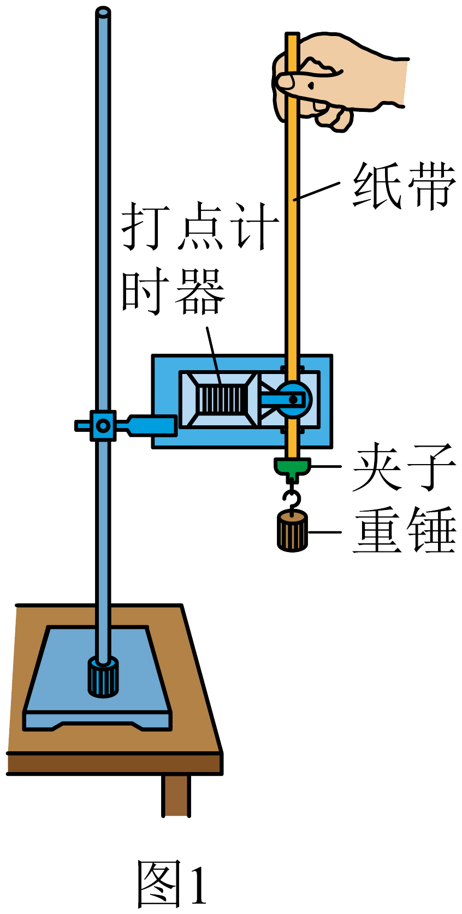
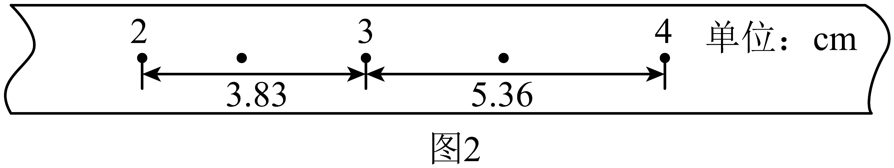
图
除点
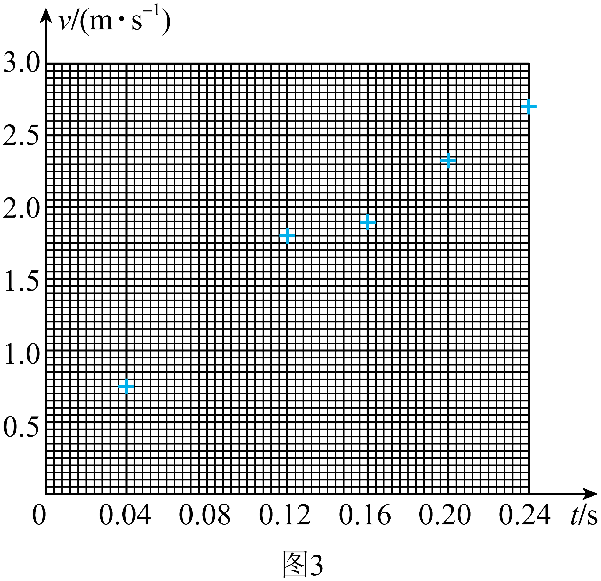
根据图
某同学居家学习期间，注意到一水龙头距地面较高，而且发现通过调节水龙头阀门可实现水滴逐滴下落，并能控制相邻水滴开始下落的时间间隔，还能听到水滴落地时发出的清脆声音．于是他计划利用手机的秒表计时功能和刻度尺测量重力加速度．为准确测量，请写出需要测量的物理量及对应的测量方法． ．
某组同学设计了一个测量当地重力加速度的方案：在一块不透明的长方形挡板上某位置开一条水平透光狭缝（图甲），让挡板从某一高处竖直下落，在挡板下落的过程中，挡板挡住光源发出的光时，计时器开始计时，透光时停止计时，再次挡光，计时器再次计时，测得先后两段挡光时间分别为
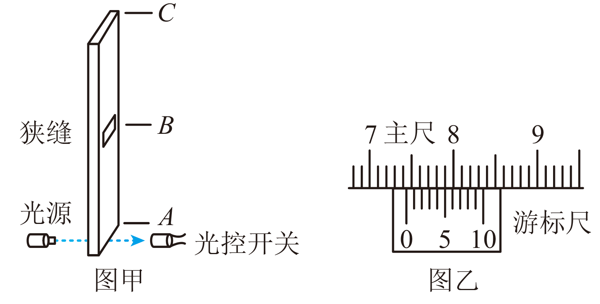
（1）对于挡板的制作，甲同学选择了一块泡沫塑料板，乙同学选择了金属板，从提高实验精度的角度看，你认为 （选填“甲”或“乙”）的选择较好；
（2）某同学用游标卡尺测量A与狭缝下边缘的距离
（3）忽略狭缝宽度，该同学利用
（4）本实验在下面的操作中，你认为正确的是
A.释放时挡板的下沿必须与光电门在同一高度
B.释放时挡板的下沿可以在光电门上方一定距离处
C.挡板下落时
（5）有同学提出狭缝的宽度可能会对实验结果产生影响，测量值 （填偏大或偏小）。并说明原因 ；
某同学用图甲所示的实验装置研究小车在斜面上的匀变速直线运动．实验步骤如下：
a．安装好实验器材，将打点计时器接到频率为
b．接通电源后，让拖着纸带的小车沿斜面向下运动，重复几次．选出一条点迹清晰的纸带，舍去开始密集的点迹，从便于测量的点开始，每个打点间隔取一个计数点，如图乙中、、……点所示．
c．用最小刻度是毫米的刻度尺测量各计数点的刻度数值，分别记作
d．分别计算出打点计时器打下计数点、、……时小车的瞬时速度
e．以
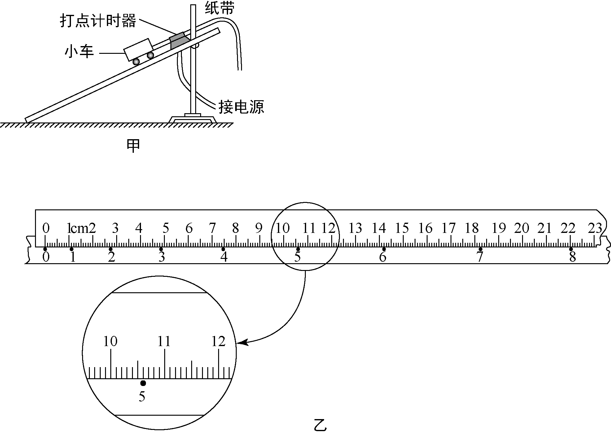
结合上述实验步骤，请你完成下列任务：
表记录的是该同学测出计数点的刻度数值，其中
表记录的是该同学根据各计数点的刻度数值，计算出打点计时器打下各计数点时小车的瞬时速度，请你根据表中
符号
速度数值
/（
该同学在图丙中已标出
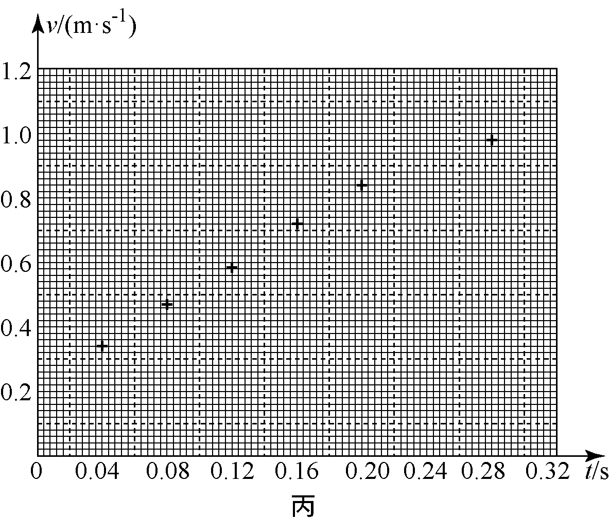
根据
为验证上述结果，该同学将打点计时器打下相邻计数点的时间间隔记为
实验小组的同学用如图1所示的装置研究小物块的匀变速直线运动．一端附有定滑轮的足够长木板固定在水平桌面上，不可伸长的轻质细绳一端与放在水平桌面上的小物块相连接，另一端绕过定滑轮挂上适当的重物．小物块运动过程中先后经过光电门
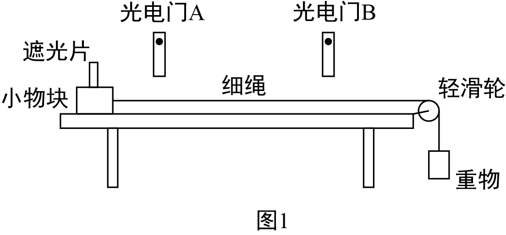
实验开始时，他们先调节木板上定滑轮的高度，使牵引小物块的细绳与木板平行．这样做的目的是（ ）
若已知安装在小物块上的遮光板的宽度为
当悬挂质量为
当悬挂质量为
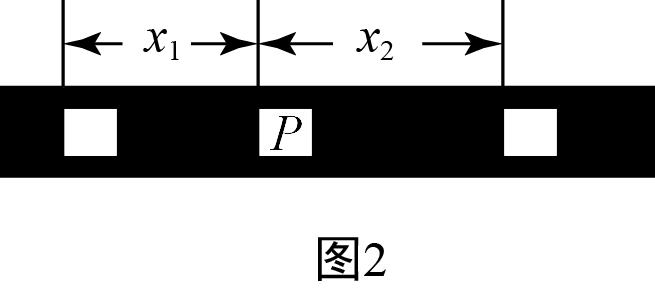
根据测得数据画出的小物块速度随时间变化的
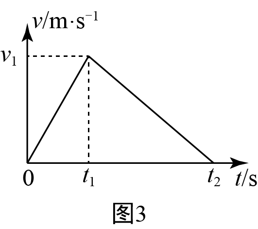
用图甲所示的实验装置研究小车速度随时间变化的规律．
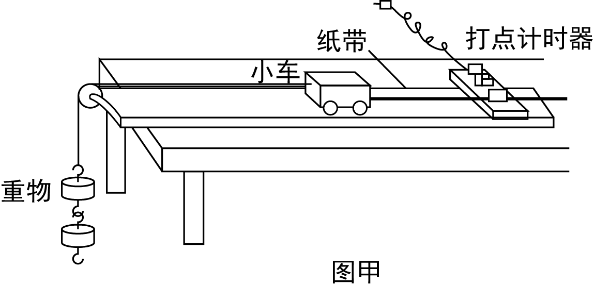
主要实验步骤如下：
a．安装好实验器材．接通电源后，让拖着纸带的小车沿长木板运动，重复几次．
b．选出一条点迹清晰的纸带，找一个合适的点当作计时起点
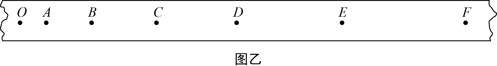
c．通过测量、计算可以得到在打
d．以速度
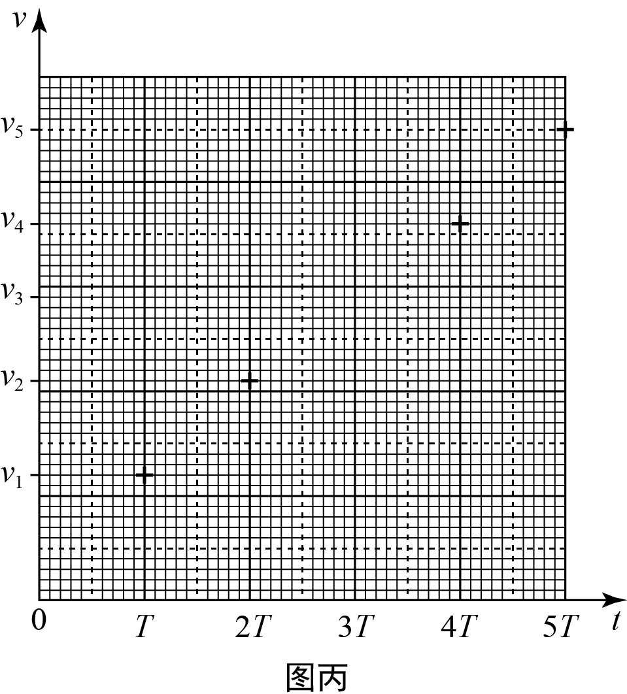
结合上述实验步骤，请你完成下列任务 ：
在下列仪器和器材中，还需要使用的有 和 （填选项前的字母）．
A．电压合适的
B．电压可调的直流电源
C．刻度尺
D．秒表
E．天平（含砝码）
在图3中已标出计数点
观察
描绘
早在16世纪末，伽利略就猜想落体运动的速度应该是均匀变化的．当时只能靠滴水计时，为此他设计了如图4所示的“斜面实验”，反复做了上百次，验证了他的猜想．请你结合匀变速直线运动的知识，分析说明如何利用伽利略“斜面实验”检验小球的速度是随时间均匀变化的．
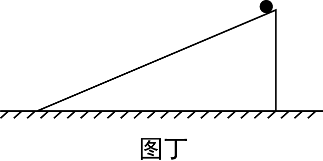
某同学用图1所示的实验装置研究小车沿斜面向下运动的规律．安装好器材后，接通电源，释放小车，打出一条纸带．舍去开始密集的点迹，从便于测量的点开始，每隔四个点取一个计数点，如图2中0、1、2……7点所示．
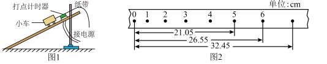
实验中，除打点计时器、小车、长木板、铁架台、导线及开关外，在下面的器材中，还必须使用的有 ．
电压合适的50Hz交流电源
电压可调的直流电源
刻度尺
秒表
天平
某同学计算出打下1、2、3、4、5这五个计数点时小车的速度，并在图3上画出坐标点．请帮助他计算打下计数点6时小车的速度v = m/s，并在图3中标出计数点6对应的坐标点，作出v-t图线 ．
根据图3，测得小车的加速度a = m/s2（结果保留2位有效数字）．
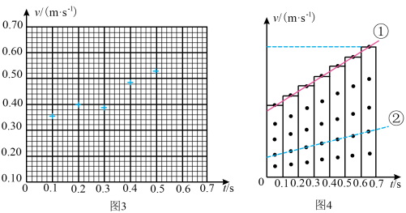
某同学把这条纸带每隔T = 0.1s 剪断，得到若干短纸条，测得长度依次为L1、L2……L7（单位：m）．再把这些纸条并排贴在一张纸上．如图4所示，使这些纸条的下端对齐，作为时间轴，并以纸带的宽度代表T的时间间隔．这些短纸条上端的中心点近似在一条直线上，该同学把它们连接起来作出图线①．若将图线①转化为小车的v-t图像．则图4中纵坐标位置标出的速度值为 （用题中的字母表示）．该同学发现每段短纸条上的第2个点，也近似在同一条直线上，如图线②所示．若测得图线②的斜率为k，则小车加速度a与斜率k的关系式 ．
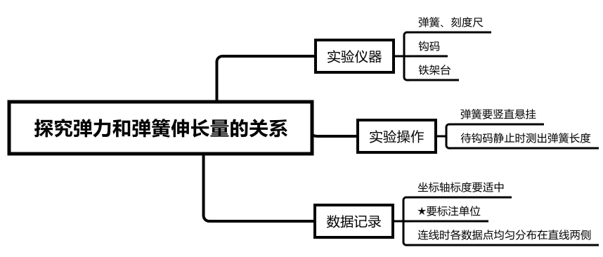
1、该实验要注意题目所给图像的横纵坐标的单位，尤其多样化；
2、该实验误差分析主要有两点：（主要分析图像误差）
①图像不过原点的原因：弹簧太重
解决方法：可通过弹簧水平使用，由重物的重力作为弹簧的拉力，消除弹簧自重的影响
②图像后来弯了的原因：钩码太重，超出弹簧劲度系数
回答下列问题：
在探究弹簧弹力大小与伸长量关系的实验中，第一组同学设计了如图
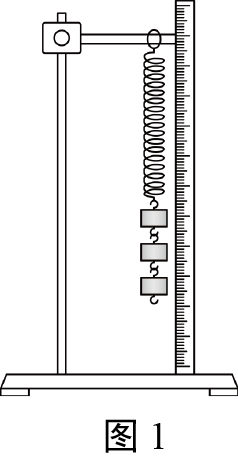
测量次序
弹簧弹力
弹簧的总长度
弹簧伸长的长度
在图
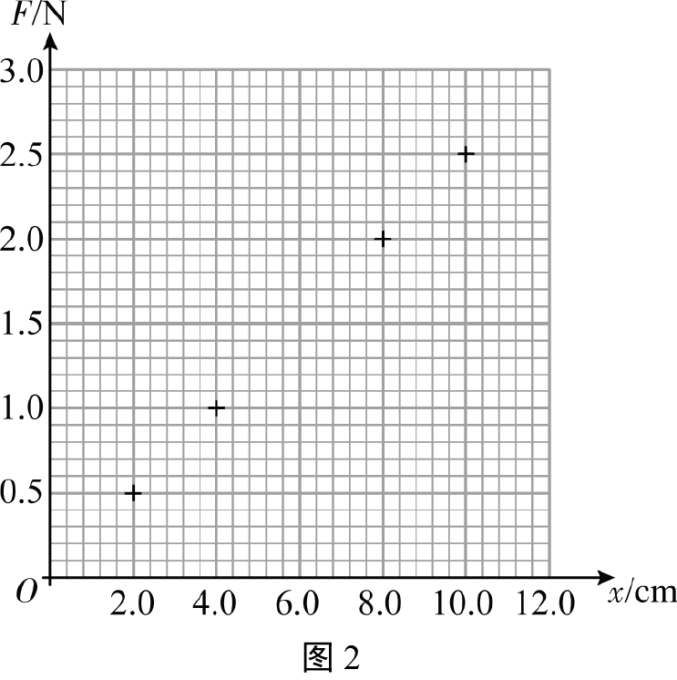
根据①所得
弹簧弹力大小与弹簧的总长度成正比
弹簧弹力大小与弹簧伸长的长度成正比
该弹簧的劲度系数约为
该弹簧的劲度系数约为
第二小组同学将同一弹簧水平放置测出其自然长度，然后竖直悬挂完成实验．他们得到的
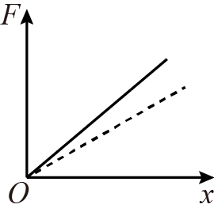
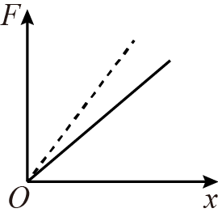
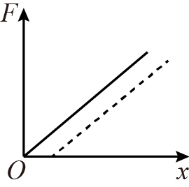
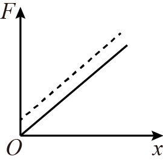
某同学想粗略测量一个原长约
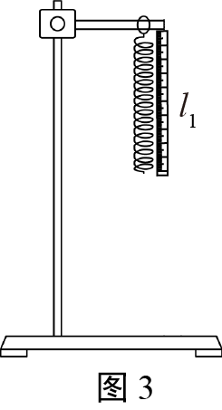
一名同学用图示装置做“测定弹簧的劲度系数”的实验．
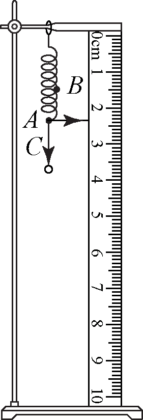
以下是这位同学根据自己的设想拟定的实验步骤，请按合理的操作顺序将步骤的序号写在横线上
A．以弹簧长度为横坐标，以钩码质量
B．记下弹簧下端不挂钩码时，其下端
C．将铁架台固定于桌子上，将弹簧的一端系于横梁上，在弹簧附近竖直固定一把刻度尺
D．依次在弹簧下端挂上
E．由图像找出
下图为根据实验测得数据标出的对应点，请做出钩码质量
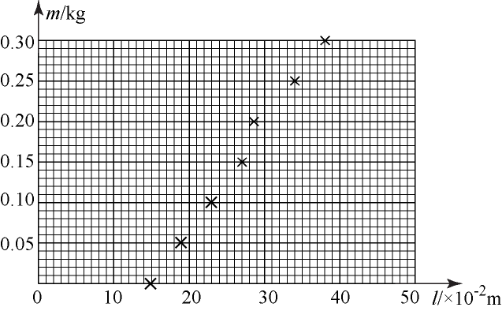
写出弹簧弹力
此实验得到的结论是：此弹簧的劲度系数
如果将指针分别固定在图示
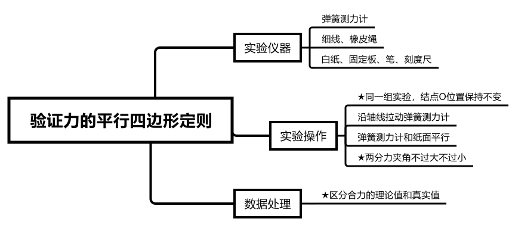
①不管实验装置怎么改，记录数据还是严格按照力的三要素进行记录就好；
②实验如果需要多次测量，需要改变的是结点O的位置，而不是保持结点O不变去改变力的方向
③减少实验误差的方法：
细线长：拉橡皮筋的绳要细一些且长一些
标记远：记录方向的两个点距离远一些
弹力大：弹簧测力计示数大一些
角度中：两个弹簧测力计的夹角适中，在
口诀：角度适中鸭，其余都选大
在“验证力的平行四边形定则”的实验中，某同学按照如下步骤进行操作：
a．在桌上放一块方木板，在方木板上铺一张白纸，用图钉把白纸钉在方木板上；
b．用图钉把橡皮条的一端固定在板上的
c．如图甲，用两个弹簧测力计分别钩住绳套，互成角度地拉橡皮条，使结点到达某一位置
d．按选好的标度，用铅笔和刻度尺作出两个弹簧测力计的拉力
e．只用一个弹簧测力计通过细绳套拉橡皮条， ；并按同一标度作出这个力
f．比较

请把步骤
本实验中步骤
控制变量法
下列操作有利于减小实验误差的是（ ）
实验前将两弹簧测力计调零后水平互钩对拉，选择两个读数相同的测力计
拴在橡皮条上的两条细绳必须等长，并且要尽量长一些
图乙是该同学在白纸上根据实验数据用同一标度画出的图示，如果没有操作失误，图乙中的
若小明和小刚两位同学在家中想验证力的平行四边形定则，他们手中有一些弹性橡皮条（弹力满足胡克定律，劲度系数为
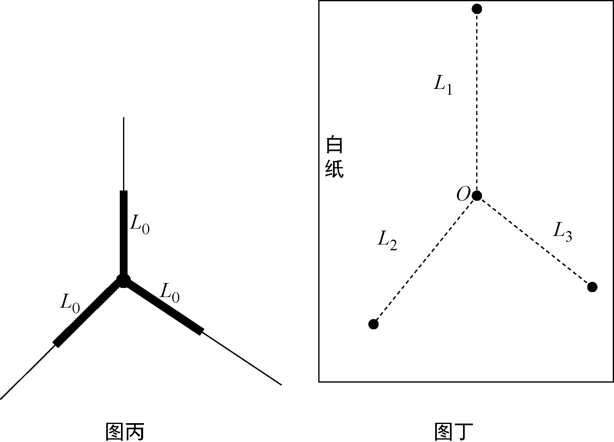
在“验证力的平行四边形定则”的实验中，某同学进行实验的主要步骤是：
a．如图甲所示，将橡皮筋的一端固定在木板上的
b．沿着两个方向拉弹簧测力计，将橡皮筋的活动端拉到某一位置，将此位置标记为
c．再用一个弹簧测力计将橡皮筋的活动端仍拉至
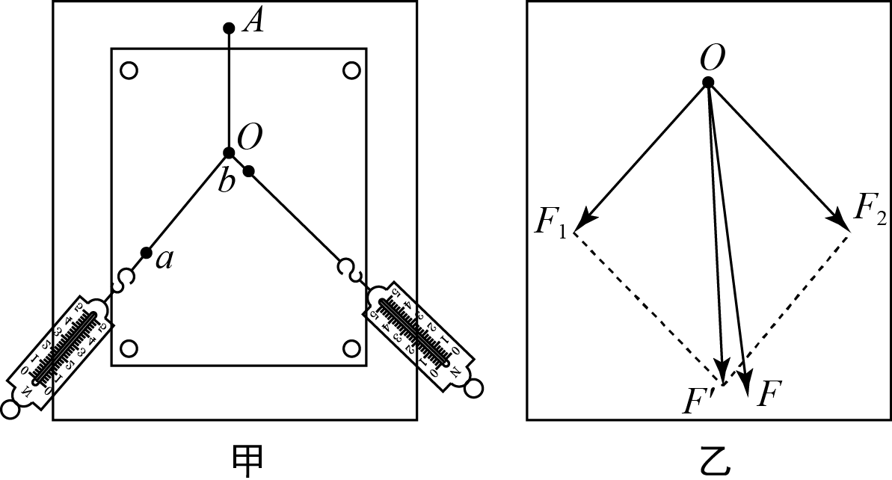
实验中确定分力方向时，图甲中的
用一个弹簧测力计将橡皮筋的活动端仍拉至
图乙是在白纸上根据实验数据作出的力的图示，其中 是
实验中的一次测量如图丙所示，两个测力计
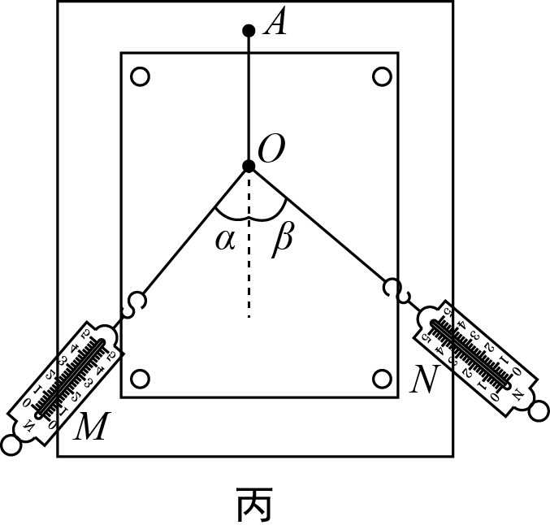
增大
“探究力的平行四边形定则”的实验如图甲所示，其中
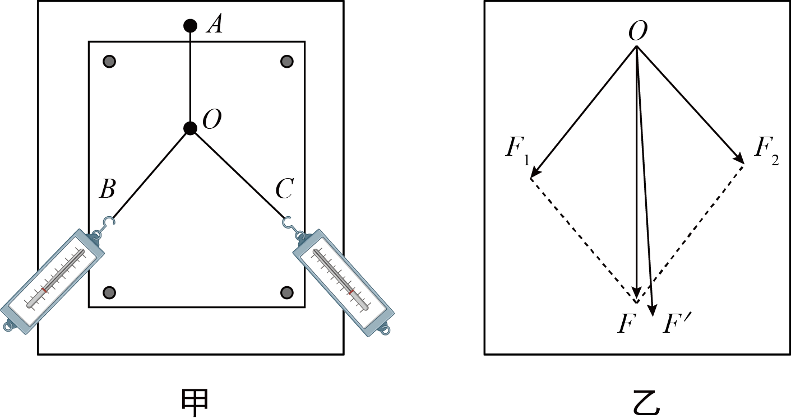
图乙中的 是力
在实验中，如果将细绳也换成橡皮筋，那么实验结果是否会发生变化？ ．（选填“变”或“不变”）．
本实验采用的科学方法是（ ）
理想实验法
等效替代法
控制变量法
建立物理模型法
1、不需要保证钩码质量远小于小车质量的情况：通过弹簧测力计直接测出小车所受合力、还可通过力传感器直接测出小车所受合力、通过整体法受力分析；
2、多留意实验装置中定滑轮与动滑轮的作用，有可能使得小车受力变成
3、根据图像分析实验误差
在“探究加速度与物体受力、物体质量的关系”实验中，做如下探究：
为研究加速度与质量的关系，可利用图1所示装置进行对比实验．两小车放在水平板上，前端通过钩码牵引，后端各系一条细线，用板擦把两条细线按在桌上，使小车静止．抬起板擦，小车同时运动，一段时间后按下板擦，小车同时停下．对比两小车的位移，可知加速度与质量大致成反比．关于实验条件，下列正确的是 （选填选项前的字母）．
小车质量相同，钩码质量不同
小车质量不同，钩码质量相同
小车质量不同，钩码质量不同
某同学为了定量验证（1）中得到的初步关系，设计实验并得到小车加速度
次数
1
2
3
4
5
6
7
在探究加速度与力的关系实验之前，需要思考如何测“力”．请在图3中画出小车受力的示意图．为了简化“力”的测量，下列说法正确的是 （选填选项前的字母）．
A．使小车沿倾角合适的斜面运动，小车受力可等效为只受绳的拉力
B．若斜面倾角过大，小车所受合力将小于绳的拉力
C．无论小车运动的加速度是多大，砂和桶的重力都等于绳的拉力
D．让小车的运动趋近于匀速运动，砂和桶的重力才近似等于绳的拉力
用图1所示的实验装置研究加速度与物体受力、物体质量之间的关系．
研究加速度与物体质量之间的关系的主要实验步骤如下：
a．用天平测出小车的质量
b．安装好实验器材，调整木板倾角平衡摩擦力和其他阻力
c．在小桶内装砂，用细绳悬挂小桶并绕过滑轮系在小车上，调整细绳方向与木板平行
d．接通电源，放开小车，打点计时器在纸带上打下一系列点；断开电源，取下纸带并在纸带上标上编号
e．保持砂和桶的总质量不变，多次在小车上加放砝码以改变小车的总质量
f．求出每条纸带对应的加速度并填入表中；在坐标纸上建立坐标系，描点作图，以研究加速度与质量的关系
综合上述实验步骤，请你完成以下任务：
实验中，需要平衡摩擦力和其它阻力，在此过程中，下列说法正确的是（ ）
小车后面不能拖纸带
系在小车的细绳上不能悬挂小桶
打点计时器必须接通电源
图2所示为实验中得到的一条纸带，纸带上相邻两计数点之间的时间间隔为
若实验中砂和桶的总质量为
某同学在研究加速度与物体受力之间的关系时改进了实验方案，他用无线力传感器来测量小车受到的拉力．如图3所示，他将无线力传感器和小车固定在一起，将系着砂桶的细绳系在传感器的挂钩上，调整砂桶细绳方向与木板平行．
请判断在改进后的实验中以下步骤是否还有必要（选填“有必要”或“没必要”）．
步骤
是否有必要
调整木板倾角平衡摩擦力和其他阻力
控制砂和桶的总质量远小于小车和车内砝码的总质量
用图1所示的实验装置探究加速度与力、质量的关系．
除图中器材外，还需要两种测量工具是 （选填选项前的字母）．
A．秒表 B．天平（含砝码） C．弹簧测力计 D．刻度尺
实验中打出的一条纸带的一部分如图2所示．纸带上标出了连续的3个计数点、、，相邻计数点之间还有4个点没有标出．打点计时器接在频率为50Hz的交流电源上．由图中数据可计算出小车的加速度 m/s2（结果保留两位有效数字）．
某同学猜想加速度与力成正比，与质量成反比，因此他认为可以不测量加速度的具体数值，仅测量不同条件下物体加速度的比值即可．他采用图3所示的实验装置，将轨道分为上下双层排列，两小车尾部的刹车线由后面的刹车系统同时控制，能使两小车同时运动或同时停下来．实验中通过比较两辆小车的位移来比较它们的加速度．你认为这位同学的方法可行吗？请说明理由 ．
某实验小组做验证牛顿第二定律实验.
实验小组中的小华用图所示装置做实验，图中带滑轮的长木板水平放置于桌面，拉力传感器可直接显示所受到的拉力大小．小华做实验时，下列操作必要且正确的是
将长木板右端适当垫高，使小车能自由匀速滑动
小车靠近打点计时器，先接通电源，再释放小车，打出一条纸带，同时记录传感器的示数
改变砂和砂桶质量，打出几条纸带
用天平测出砂和砂桶的质量
为了减小误差，实验中一定要保证砂和砂桶的质量远小于小车的质量
实验小组中的小明如图所示的实验装置来做实验．
小明同学平衡了摩擦力后．以砂和砂桶的重力为F，在小车质量M保持不变情况下，不断往桶里加砂，砂的质量最终达到，测小车加速度a，作a-F的图像．下列图线正确的是 ．
A
B
C
D
图为上述实验中打下的一条纸带，A点为小车刚释放时打下的起始点，每两点间还有四个计时点未画出，打点计时器的频率为50 Hz，则C点的速度为 m/s，小车的加速度为 m/s2.（以上两空均保留一位有效数字）
图1所示为某同学研究“在外力一定的条件下，物体的加速度与其质量间的关系”的实验装置示意图．
下面列出了一些实验器材：
电磁打点计时器、纸带、带滑轮的长木板、垫块、小车和砝码、砂和砂桶、刻度尺．
除以上器材外，还需要的实验器材有（ ）
秒表
天平（附砝码）
低压交流电源
低压直流电源
实验中，需要补偿打点计时器对小车的阻力及其它阻力：小车放在木板上，后面固定一条纸带，纸带穿过打点计时器．把木板一端垫高，调节木板的倾斜度，使小车在不受绳的拉力时能拖动纸带沿木板做 运动．
实验中，为了保证砂和砂桶所受的重力近似等于使小车做匀加速运动的拉力，砂和砂桶的总质量
如图2所示，
在做实验时，该同学已补偿了打点计时器对小车的阻力及其它阻力．在处理数据时，他以小车的加速度的倒数
视频预览